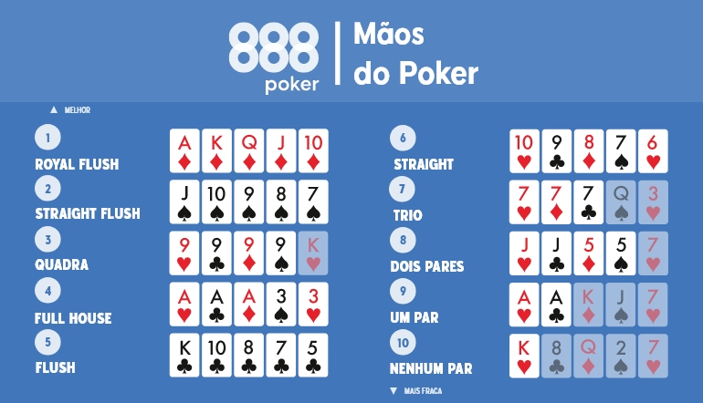

Matemática
Explore o trabalho que mostram como a matemática pode ser prática e interessante, desde álgebra até estatísticas aplicadas.
Eu achei o trabalho interessante, pois ele proporciona uma maneira divertida de aprender sobre probabilidade e combinatória. Além disso, aplicar esses conceitos no contexto de um jogo como o Poker torna o aprendizado mais envolvente e desafiador, estimulando o raciocínio lógico e a resolução de problemas de forma prática.
